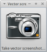
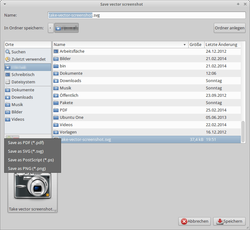

Gtk vector screenshot
Dieser Artikel wurde für die folgenden Ubuntu-Versionen getestet:
Ubuntu 16.04 Xenial Xerus
Ubuntu 14.04 Trusty Tahr
Zum Verständnis dieses Artikels sind folgende Seiten hilfreich:

Gtk vector screenshot  ist ein kleines Spezialprogramm zum Erstellen von Bildschirmfotos (Screenshots). Das Besondere ist, dass das Ergebnis nicht nur pixelbasiert als PNG-Datei, sondern auch als Vektorgrafik im SVG-Format abgespeichert werden kann. Da Vektorgrafiken beliebig skaliert werden können, braucht man sich fast keine Gedanken über die später tatsächlich benötigte Größe zu machen. Zwingende Voraussetzung ist allerdings, dass die Anwendung, deren Fenster fotografiert werden sollen, die Grafikbibliothek GTK+ in der Version 3 oder neuer verwendet.
ist ein kleines Spezialprogramm zum Erstellen von Bildschirmfotos (Screenshots). Das Besondere ist, dass das Ergebnis nicht nur pixelbasiert als PNG-Datei, sondern auch als Vektorgrafik im SVG-Format abgespeichert werden kann. Da Vektorgrafiken beliebig skaliert werden können, braucht man sich fast keine Gedanken über die später tatsächlich benötigte Größe zu machen. Zwingende Voraussetzung ist allerdings, dass die Anwendung, deren Fenster fotografiert werden sollen, die Grafikbibliothek GTK+ in der Version 3 oder neuer verwendet.
Konzeptionell bedingt kann nur der Inhalt eines Fensters aufgenommen werden. Wer ein Bild inklusive Fensterrahmen oder eins des kompletten Desktops benötigt, muss auf ein anderes Programm (siehe Bildschirmfotos) ausweichen.
Installation¶
 Das Programm ist in den offiziellen Paketquellen enthalten. Folgendes Paket muss installiert [1] werden:
Das Programm ist in den offiziellen Paketquellen enthalten. Folgendes Paket muss installiert [1] werden:
gtk-vector-screenshot (universe)
 mit apturl
mit apturl
Paketliste zum Kopieren:
sudo apt-get install gtk-vector-screenshot
sudo aptitude install gtk-vector-screenshot
Nach der Installation muss man sich erst ab- und wieder neu anmelden, bevor das Programm zur Verfügung steht.
Bedienung¶

Anschließend lässt sich das Programm bei Ubuntu-Varianten mit einem Anwendungsmenü über den Eintrag "Zubehör -> Take Vector Screenshot" oder den Befehl take-vector-screenshot starten [2].
Zum Abfotografieren eines Programmfensters muss nun das gewünschte Programm gestartet werden. Ein Linksklick  in das quadratische Fenster von Gtk vector screenshot ändert den Mauszeiger in ein Kreuz, mit dem man das gewünschte Zielfenster wiederum via Linksklick auswählt. Danach öffnet sich automatisch ein Dialog zum Speichern. Links am Rand kann man das gewünschte Zielformat angeben. Zur Auswahl stehen:
in das quadratische Fenster von Gtk vector screenshot ändert den Mauszeiger in ein Kreuz, mit dem man das gewünschte Zielfenster wiederum via Linksklick auswählt. Danach öffnet sich automatisch ein Dialog zum Speichern. Links am Rand kann man das gewünschte Zielformat angeben. Zur Auswahl stehen:
SVG
PNG
Vektorgrafiken im SVG-Format lassen sich mit Firefox oder verschiedenen Bildbetrachtern anzeigen. Bei Bedarf können sie auch nachbearbeitet werden, beispielsweise mit Inkscape oder Karbon.
Links¶
Pixelfreie Screenshots
 - freiesMagazin, 11/2011 (auch bei Pro-Linux.de )
- freiesMagazin, 11/2011 (auch bei Pro-Linux.de )Better PDF screenshots with gtk 3
- Blogbeitrag des Programmautors, 06/2011Screencasts (Videos), die den Einsatz in der Praxis zeigen:
Bildschirmfotos
 Programmübersicht
Programmübersicht

- Erstellt mit Inyoka
-
 2004 – 2017 ubuntuusers.de • Einige Rechte vorbehalten
2004 – 2017 ubuntuusers.de • Einige Rechte vorbehalten
Lizenz • Kontakt • Datenschutz • Impressum • Serverstatus -
Serverhousing gespendet von